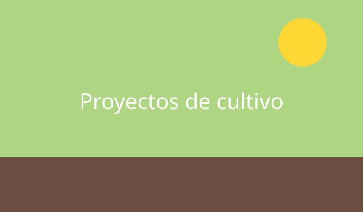

Huerta vertical con botellas
Una estructura colgante hecha con botellas plásticas recicladas, ideal para aromáticas.
Huerta en Casa
Estos son algunos de los proyectos que fui armando y que podés replicar en tu casa.

Una estructura colgante hecha con botellas plásticas recicladas, ideal para aromáticas.
Un cajón a la altura de la cintura para cultivar sin agacharse.
Brotes de lenteja y alfalfa listos para comer en menos de una semana.